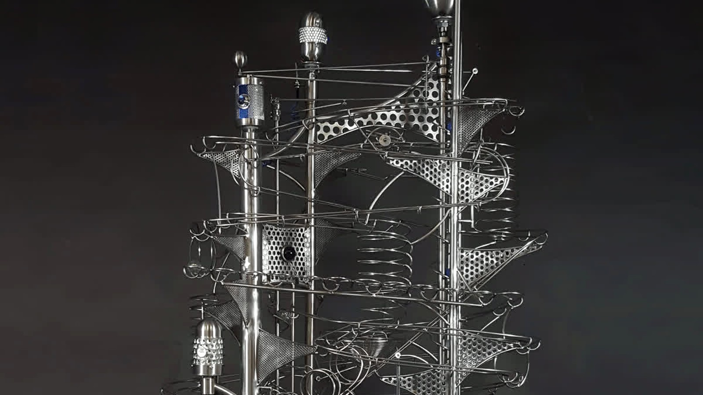
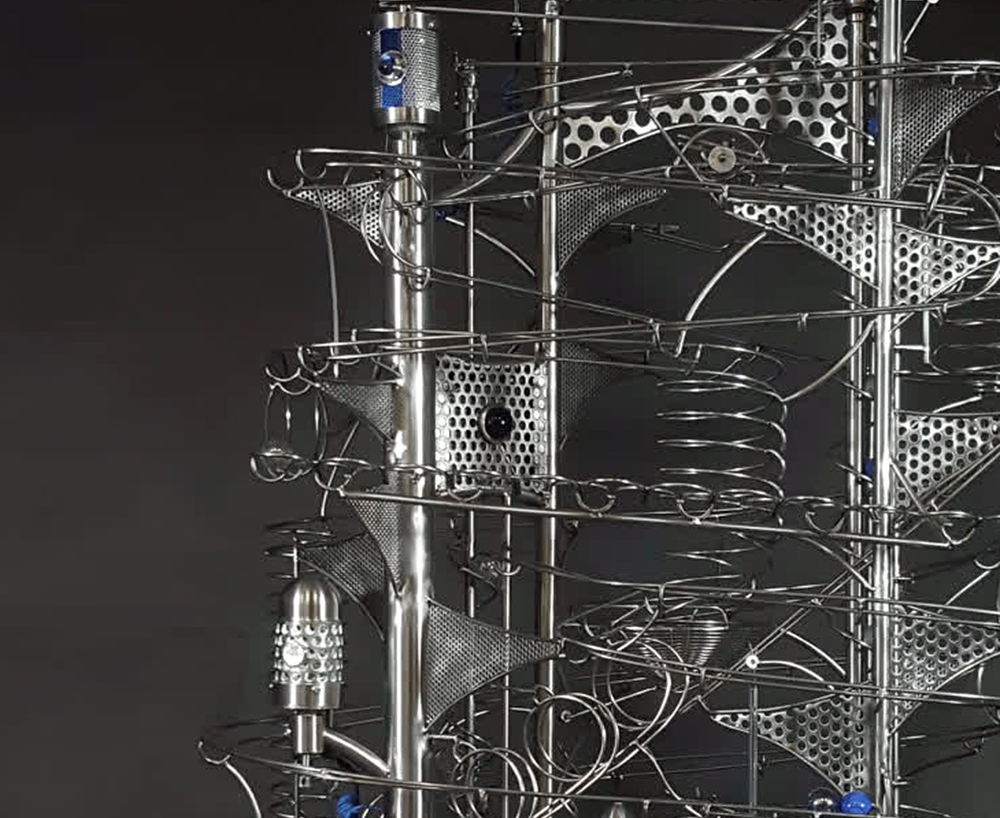

What is a rolling ball sculpture?
A form of kinetic art in which marbles travel through carefully engineered tracks, loops, spirals and mechanisms, creating repeated movement, rhythm and sound.

Rolling ball sculpture · kinetic art
One-of-a-kind kinetic sculptures, designed and handcrafted by Robert Kalinovich near the Rocky Mountains in Alberta, Canada.
Choose your path
Whether you are looking for a finished work, considering an original commission, exploring a sculpture for a particular space, or planning a professional project, begin with the path that fits.
Ask about current availability, explore recently collected pieces and receive advance notice of new releases.
Begin with a space, an idea, a memory or simply a desired feeling and scale.
Share a photograph and measurements to begin a practical conversation about placement and scale.
For designers, architects, hospitality, offices, galleries and institutional projects.
Selected works
Each work has its own rhythm, mechanisms and character. Collected pieces remain part of the story and can inspire a conversation about a completely new original.
Movement is the medium
Watch Observer in motion and follow the rhythm, sound, light and mechanical detail that still photography cannot fully reveal.
Explore Observer ↗Objects in motion
Robert’s rolling ball sculptures live at the intersection of the visually pleasing and the technically possible. Each original work turns gravity, friction, sound and repetition into an experience that rewards attention.
Placement planning See it in your space
Share a photograph and approximate measurements to begin a useful conversation about scale, orientation, viewing distance and how a sculpture could belong in the space.

Commission an original
From an intimate tabletop work to an architectural installation, a commission begins with your space, your story and the feeling you want the sculpture to create.

Made by hand
Thousands of bends and welds can exist inside a single work. Stainless steel, glass marbles, wood and repurposed components are shaped into a precise choreography designed to endure.
Clear answers for collectors
Direct answers help collectors, designers and search platforms understand what Objects In Motion creates and what it takes to own or commission a work.
Read every question ↗A form of kinetic art in which marbles travel through carefully engineered tracks, loops, spirals and mechanisms, creating repeated movement, rhythm and sound.
Yes. Robert designs, bends, welds, assembles and tests every Objects In Motion sculpture by hand. Each work is signed, dated and one of a kind.
Yes. A commission can begin with photographs, measurements, a preferred scale, a theme or simply the feeling you want the sculpture to create.
Worldwide delivery can be discussed for each work. Packing, destination, documentation, setup and practical requirements are confirmed before shipment.
Collector preview
Receive an advance notification when a new sculpture becomes available, before it is introduced publicly.